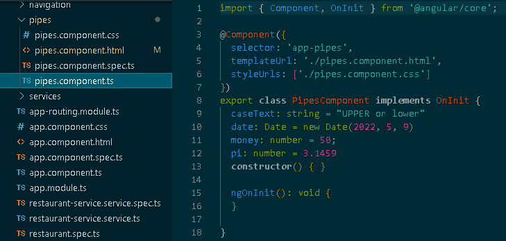

For a complete list of pipes visit the Angular documentation site
The following is the model for this section, attributes will be used to demonstrate pipes: 
The following is an example of each of these pipes in action:
The results of applying each pipe:
{{caseText | uppercase}}
{{caseText | lowercase}}
{{date | date: "longDate"}}
{{money | currency: 'EUR'}}
{{pi | number: '1.1-3'}}
{{pi | percent}}